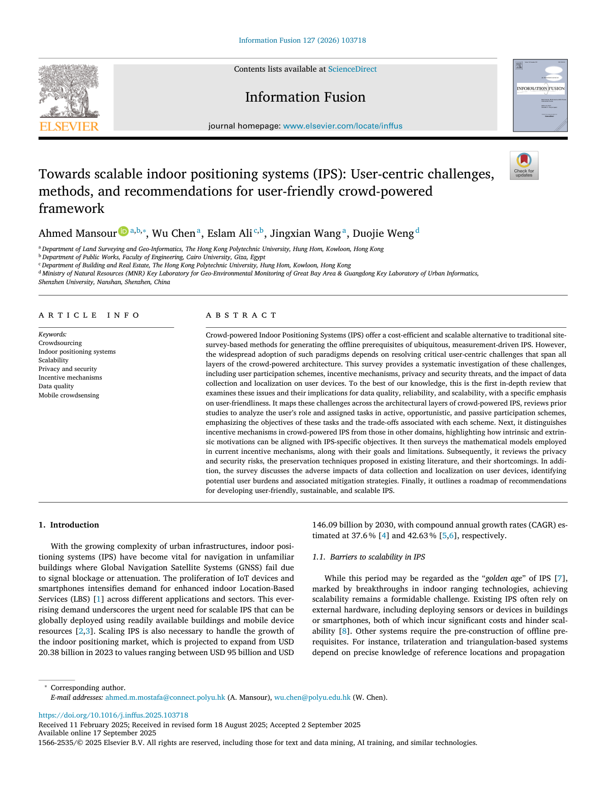

Towards scalable indoor positioning systems (IPS): User-centric challenges, methods, and recommendations for user-friendly crowd-powered framework
Paper preview

Extended summary
This review synthesizes user-centric challenges in crowd-powered IPS and connects data collection, participation, incentives, privacy, security, device burden, and deployment readiness into a scalable IPS perspective.
When to cite this paper
- crowd-powered or crowdsourcing-based IPS is being reviewed
- user participation, incentives, privacy, or smartphone burden are discussed in IPS
- scalable fingerprinting database construction and mobile crowdsensing are compared
- researchers need a user-centered taxonomy for IPS deployment barriers
Keywords
indoor positioning systemscrowdsourcingmobile crowdsensingscalabilityuser interventionprivacy and securityincentive mechanismsdata quality
Official link
https://doi.org/10.1016/j.inffus.2025.103718
For publisher-restricted articles, link to the DOI or an allowed accepted manuscript rather than uploading a restricted PDF.
BibTeX
@article{Mansour2026towards,
title = {Towards scalable indoor positioning systems (IPS): User-centric challenges, methods, and recommendations for user-friendly crowd-powered framework},
author = {Ahmed Mansour and Wu Chen and Eslam Ali and Jingxian Wang and Duojie Weng},
year = {2026},
journal = {Information Fusion},
doi = {10.1016/j.inffus.2025.103718},
}